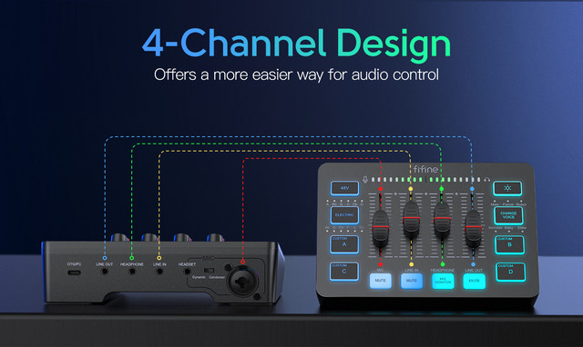
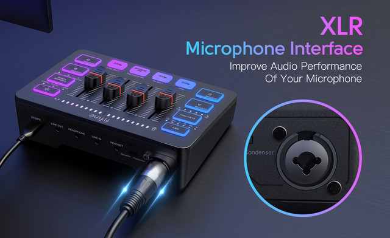
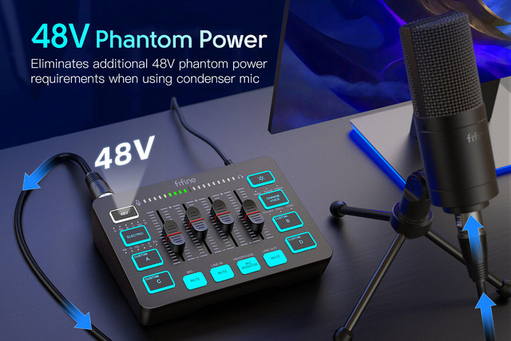
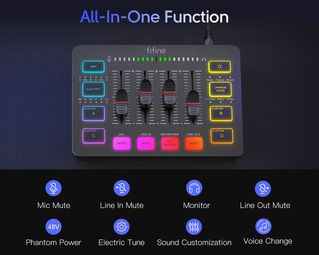
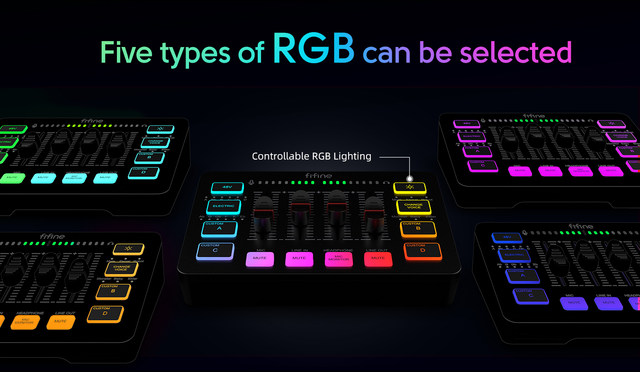
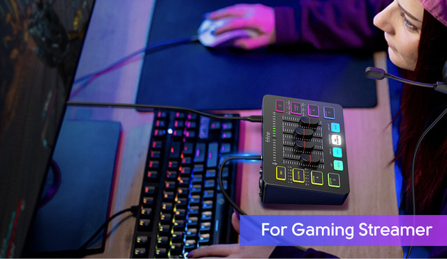
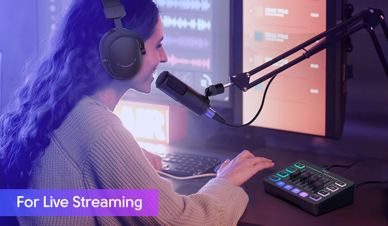

Featured four individual control channels, the gaming mixer can be individually adjusted different devices. You will gain a improved using experience via push the volume fader.

The mixer supports XLR microphone inputs, which can help improve the audio quality of the microphone. Built-in 48V phantom power provides more options for microphones. Directly use it with your condenser microphone, no extra power required. Note: XLR cables are not included


With the basic usage functions, including mute button, volume adjustment and real-time monitoring, the podcast mixer gives you an quick attention on using the mixer inter to solve the problem of audio adjustment.

Brilliant cool RGB lighting promotes gaming atmosphere when in live gaming or game voice. Voice change, customized sound button, or electronic button add up interaction between you and your audience during live entertainment streaming, making your recording process to a whole new level of fun.

The back of the gaming audio interface is set up multiple audio port. You set up dual PCs for live streaming or plug in different audio devices for audio mixing. Multiple selections meet your needs in different scenarios.

